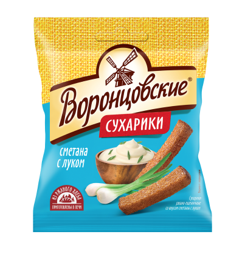
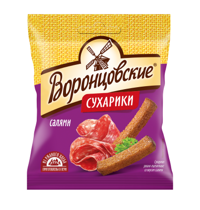
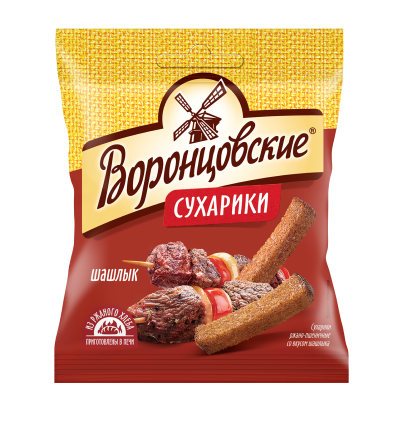
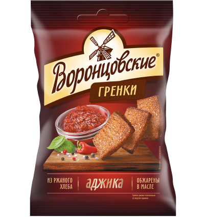
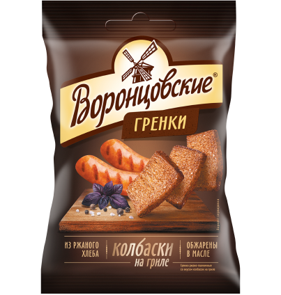

Воронцовские - российский производитель снековой продукции. Компания специализируется на производстве сухариков и гренок с различными вкусами.
Продукция:
-

Сухарики ржано-пшеничные со вкусом сметаны с луком
Состав: хлеб из смеси ржаной и пшеничной муки (мука ржаная обдирна, мука пшеничная хлебопекарная первого сорта, вода питьевая, соль, дрожжи хлебопекарные), масло растительное (подсолнечное), ароматизатор (соль, мальтодекстрин, лук порошок, сахар, усилители вкуса и аромата (глутамат натрия 1-замещённый, 5'-инозинат натрия 2-замещённый, 5'-гуанилат натрия 2-замещённый), молоко цельное сухое, зелень сушёная, чеснок порошок, регуляторы кислотности (лимонная кислота, молочная кислота, лактат кальция, ацетаты натрия), натуральные вкусоароматические вещества, вкусоароматические вещества, белок растительный гидролизованный (соевый), жир растительный, краситель куркумин, антислёживающий агент диоксид кремния аморфный)
380 ккал1590 кДж10.0 Белки9.0 Жиры64.0 Углеводы -

Сухарики ржано-пшеничные со вкусом салями
Состав: хлеб из смеси ржаной и пшеничной муки (мука ржаная обдирная, мука пшеничная хлебопекарная первого сорта, вода питьевая, соль, дрожжи хлебопекарные), масло растительное (подсолнечное), комплексная пищевая добавка вкусоароматическая (соль, мальтодекстрин, сахар, декстроза, усилители вкуса и аромата (глутамат натрия 1-замещенный, 5'-гуанилат натрия 2-замещенный, 5'-инозинат натрия 2-замещенный), вкусоароматические вещества, смесь сушеных овощей, антислеживающий агент диоксид кремния аморфный, краситель экстракт паприки, специи, регуляторы кислотности (лимонная кислота, яблочная кислота))
390 ккал1630 кДж10.0 Белки10.0 Жиры64.0 Углеводы -

Сухарики ржано-пшеничные со вкусом шашлыка
Состав: хлеб из смеси ржаной и пшеничной муки (мука ржаная обдирная, мука пшеничная хлебопекарная первого сорта, вода питьевая, соль, дрожжи хлебопекарные), масло растительное (подсолнечное), ароматизатор (соль, мальтодекстрин, декстроза, порошок паприки, порошок чеснока, порошок лука, усилители вкуса и аромата (глутамат натрия 1-замещенный, 5'-гуанилат натрия 2-замещенный, 5'-инозинат натрия 2-замещенный), вкусоароматические вещества, регуляторы кислотности (лимонная кислота, ацетаты натрия), специи, краситель экстракт паприки, жир растительный, антислеживающий агент диоксид кремния аморфный)
380 ккал1590 кДж10.0 Белки9.0 Жиры65.0 Углеводы -

Гренки ржано-пшеничные со вкусом аджики
Состав: хлеб из смеси ржаной и пшеничной муки (мука ржаная обдирная, мука пшеничная хлебопекарная первого сорта, вода питьевая, соль, дрожжи хлебопекарные), масло растительное (подсолнечное), ароматизатор (соль, мука пшеничная, чеснок порошок, усилители вкуса и аромата (глутамат натрия 1-замещенный, 5'-гуанилат натрия 2-замещенный, 5'-инозинат натрия 2-замещенный), сахар, зелень сушёная, натуральные вкусоароматические вещества, регулятоы кислотности (ацетаты натрия, лимонная кислота), жир растительный, антислеживающий агент диоксид кремния аморфный)
480 ккал2010 кДж7.0 Белки32.0 Жиры41.0 Углеводы -

Гренки ржано-пшеничные со вкусом колбасок на гриле
Состав: хлеб из смеси ржаной и пшеничной муки (мука ржаная обдирная, мука пшеничная хлебопекарная первого сорта, вода питьевая, соль, дрожжи хлебопекарные), масло растительное (подсолнечное), комплексная пищевая добавка (соль, мальтодекстрин, декстроза, сыворотка молочная сухая, овощи сушеные (лук, чеснок), усилители вкуса и аромата (глутамат натрия 1-замещенный, 5'-Рибонуклеотиды натрия 2-замещенные), сахар, регуляторы кислотности (ацетат натрия, диацетат натрия, лимонная кислота), вкусоароматические вещества, натуральные вкусоароматические вещества, коптильный ароматизатор, антислеживающий агент диоксид кремния аморфный, краситель экстракт паприки)
500 ккал2090 кДж7.0 Белки32.0 Жиры47.0 Углеводы
Партнер Afzuni с 2023 года